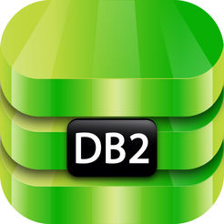

Un gestor de base de datos (DataBase Managenent System) es un sistema que permite la creación, gestión y administración de bases de datos, así como la elección y manejo de las estructuras necesarios para el almacenamiento y búsqueda de la información del modo más eficiente posible.
En la actualidad, existen multitud de SGBD en la mayoría relacionales. A lo largo de este post vamos a mostrar los 10 gestores de bases de datos más usados.
MySQL
Es un sistema de gestión de base de datos relacional, multihilo y multiusuario seguramente el más usado en aplicaciones creadas como software libre.
Por un lado se ofrece bajo la GNU GPL, pero, empresas que quieran incorporarlo en productos privativos pueden comprar a la empresa una licencia que les permita ese uso.
Ventajas:
-
Velocidad al realizar las operaciones
-
Bajo costo en requerimientos para la elaboración de bases de datos
-
Facilidad de configuración e instalación.
Microsoft SQL Server
Es un sistema de gestión de bases de datos relacionales basado en el lenguaje Transact-SQL, capaz de poner a disposición de muchos usuarios grandes cantidades de datos de manera simultánea.
Es un sistema propietario de Microsoft. Sus principales características son:
-
Soporte de transacciones.
-
Escalabilidad, estabilidad y seguridad.
-
Soporta procedimientos almacenados.
-
Incluye también un potente entorno gráfico de administración, que permite el uso de comandos DDL y DML gráficamente.
-
Permite trabajar en modo cliente-servidor donde la información y datos se alojan en el servidor y las terminales o clientes de la red sólo acceden a la información.
-
Además permite administrar información de otros servidores de datos
Su principal desventaja es el precio, aunque cuenta con una versión EXPRESS que permite usarlo en entornos pequeños. (Aprox. unos 4GB de información y varios millones de registros por tabla)
Oracle
Es un sistema de gestión de base de datos relacional (o RDBMS por el acrónimo en inglés de Relational Data Base Management System), fabricado por Oracle Corporation.
Tradicionamente Oracle ha sido el SGBS por excelencia, considerado siempre como el más completo y robusto, destacando por:
Tambien siempre ha sido considerado de los más caros, por lo que no se ha estadarizado su uso como otras aplicaciones.
Al igual que SQL Server, Oracle cuenta con una versión EXPRESS gratis para pequeñas instalaciones o usuarios personales.
Microsoft Access
Es un sistema de gestión de bases de datos Relacional creado por Microsoft (DBMS) para uso personal de pequeñas organizaciones.
Se ha ofrecido siempre como un componente de la suite Microsoft Office aunque no se incluye en el paquete “básico”.
Una posibilidad adicional es la de crear ficheros con bases de datos que pueden ser consultados por otros programas.
Entre las principales funcionalidades reseñables podemos indicar que:
-
Permite crear tablas de datos indexadas.
-
Modificar tablas de datos.
-
Relaciones entre tablas (creación de bases de datos relacionales).
-
Creación de consultas y vistas.
-
Consultas referencias cruzadas.
-
Consultas de acción (INSERT, DELETE, UPDATE).
-
Formularios.
-
Informes.
-
Entorno de programación a través de VBA
-
Llamadas a la API de windows.
PostgreSQL
Es un sistema de gestión de base de datos relacional orientada a objetos y libre, publicado bajo la licencia BSD.
Como muchos otros proyectos de código abierto, el desarrollo de PostgreSQL no es manejado por una empresa y/o persona, sino que es dirigido por una comunidad de desarrolladores que trabajan de forma desinteresada, altruista, libre y/o apoyada por organizaciones comerciales. La comunidad PostgreSQL se denominada el PGDG (PostgreSQL Global Development Group).
Sus principales características son:
-
Alta concurrencia: mediante un sistema denominado MVCC (Acceso concurrente multiversión, por sus siglas en inglés)
-
Amplia variedad de tipos nativos: provee nativamente varios soportes
-
Ahorros considerables de costos de operación
-
Estabilidad y confiabilidad
DB2
Este SGBD es propiedad de IBM, bajo la cual se comercializa el sistema de gestión de base de datos. Utiliza XML como motor, además el modelo que utiliza es el jerárquico en lugar del modelo relacional que utilizan otros gestores de bases de datos. Es el único de los gestores que hemos comentado que nos relacional.
Sus caracteristicas más importantes son:
-
Permite el manejo de objetos grandes (hasta 2 GB)
-
La definición de datos y funciones por parte del usuario, el chequeo de integridad referencial,
-
SQL recursivo, soporte multimedia: texto, imágenes, video, audio; queries paralelos, commit de dos fases, backup/recuperación on−line y offline.
-
Permite agilizar el tiempo de respuestas de esta consulta
-
Recuperación utilizando accesos de sólo índices.
-
Predicados correlacionados.
-
Tablas de resumen
-
Tablas replicadas
-
Uniones hash
Su principal desventaja es el precio, está dirigido solo a grandes empresas con necesidades de almacenamiento y procesamiento muy altas.
Al igual que SQL Server y Oracle dispone de una versión EXPRESS gratis pero no de libre distribución.
Existen muchos más gestores de bases de datos en el mercado, pero estos como he comentado son los más usados.
Todos son relacionales (a excepción del BD2) y comparten por tanto lenguaje de consulta (con algunas variantes propias) que es SQL. Es importante por tanto para cualquiera que desee trabajar con bases de datos comenzar por el estudio de este lenguaje común y luego estudiar las peculiaridades de la base de datos en cuestion.
Entre los citados seguro que encontramos el que más se adapta a nuestras necesidades de acuerdo a inversión a realizar, volumen de información a almacenar, tipo de consultas a realizar, etc.



 1
1 2
2 4
4 7
7